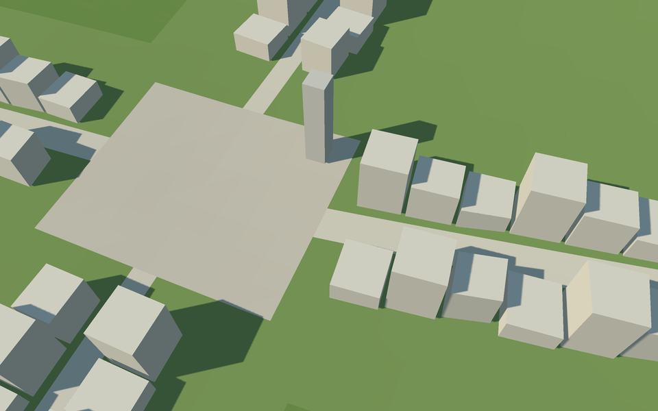
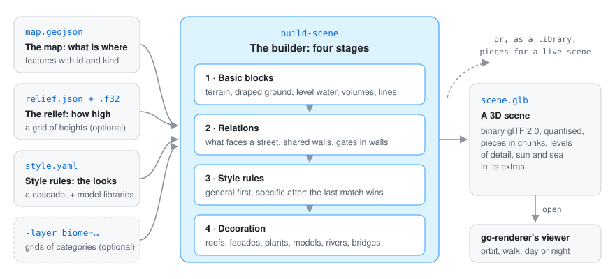
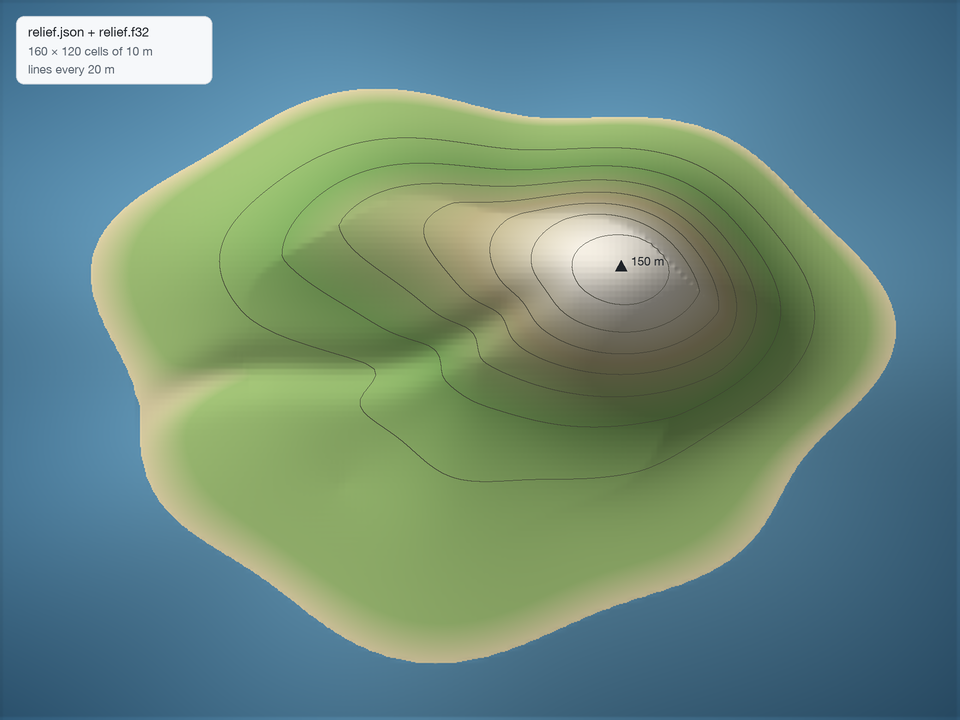

A map says where things are: this polygon is a house, this line is a street. It does not say what a house looks like. Go Scene Builder adds that, following style rules written by you, so the same map can become a stone town or a timber village just by changing the rules. It knows nothing about any particular world: the map and the rules do.

| Stages 1 to 3 only: basic blocks | With stage 4: decoration |
|---|---|
 |
|
| Houses are volumes of the right height, streets and the square are draped on the relief. | Roofs, facades on the side that faces a street, a tower and lamps on the square. |
GEOS must be installed (pkg-config geos).
go run ./cmd/build-scene -map map.geojson -relief relieve.json -style style.yaml -out scene.glb
go run ./cmd/build-scene -map map.geojson -relief relieve.json -layer biome=biomes.json -style style.yaml -out scene.glb
It prints how long each stage took and the first warnings (features no rule styles, wrong values).
-profile cpu.out writes a CPU profile for go tool pprof. Then open the scene:
go run ./cmd/visor scene.glb in Go Renderer.
The example island is a complete set of inputs to try it with.
| The map | The relief |
|---|---|

|
 |
Every feature has a kind; the rules give it a meaning. |
160 × 120 cells of 10 metres; under 0 metres is the sea floor. |
The map is a GeoJSON FeatureCollection. Every feature has properties.id (stable between
versions) and properties.kind (a free word: the rules give it a meaning); any other property can
be read by the rules (floors, use, width…). The collection’s properties say how to read the
coordinates: units (km or m), axes (east-north or east-south) and origin (the point
the scene is centred on).
{"type": "FeatureCollection",
"properties": {"units": "m", "axes": "east-north", "origin": [0, 0]},
"features": [
{"type": "Feature", "properties": {"id": "main-street", "kind": "street", "width": 8},
"geometry": {"type": "LineString", "coordinates": [[-430, -220], [-260, -210], [-200, -210]]}}
]}
The relief is relieve.json, {"columns", "rows", "cell", "west", "north", "units"} with the
edges of the grid, and next to it relieve.f32: heights in metres as little-endian float32, row by
row from the north, each at the centre of its cell. Without a relief the ground is flat. The header
can have any name: the values are read from the same path with .f32 instead of .json (the
example island’s are relief.json and relief.f32).
Layers are grids of categories in the same format with labels (the name of every value), such
as the biomes a climate simulator writes: -layer biome=biomes.json. They colour the terrain and
sow vegetation (decoration).

A binary glTF 2.0 file, quantised to take less room. Scene coordinates are in kilometres, x east,
y up, z south, centred on the origin. Pieces are grouped by material in squares of chunk km
(0.5 by default) so the viewer only draws those in sight; terrain pieces are marked walkable
(ground). The scene’s extras carry the sun, fog, an optional sea and the vertical scale, which
Go Renderer reads.
Go Simulator uses the builder to draw growing towns live with the same style rules. build.Build
takes the same inputs as the command plus Heights (any source of ground heights, for a scene
whose terrain exists already), Detail (the longest side of draped triangles without a relief) and
Context (features that take part in the relations without being built, such as the streets
around a house being rebuilt).
Done: reading maps, reliefs and rules; the basic blocks; the relations between blocks; recipes for
walls, roofs (flat, gable, hip), gate towers, facades (door, windows, shutters, flower boxes, an
emblem, lamps) and plants; materials with procedural patterns and glowing materials; colour
palettes; models drawn as instances; biomes; levels of detail; rivers and bridges; the .glb
writer; build-scene; and use as a library from Go Simulator. Next: balconies and more
decorations.